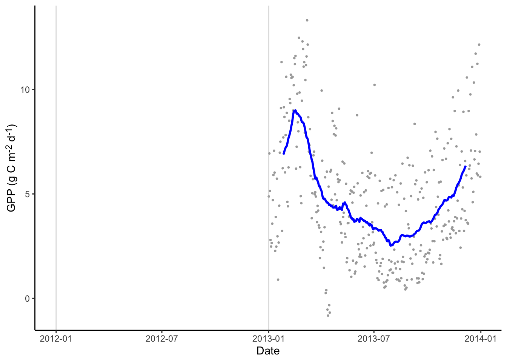
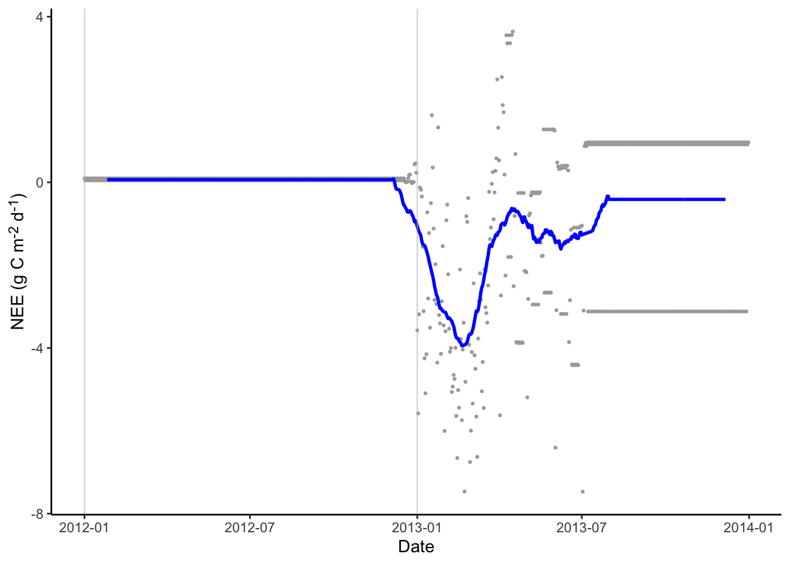
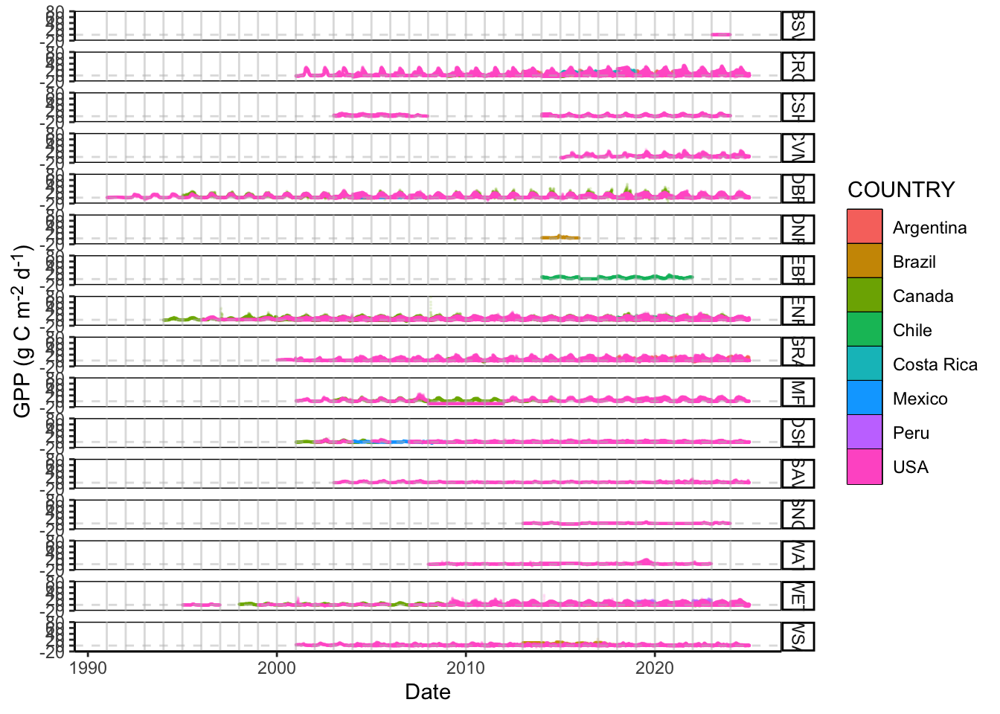
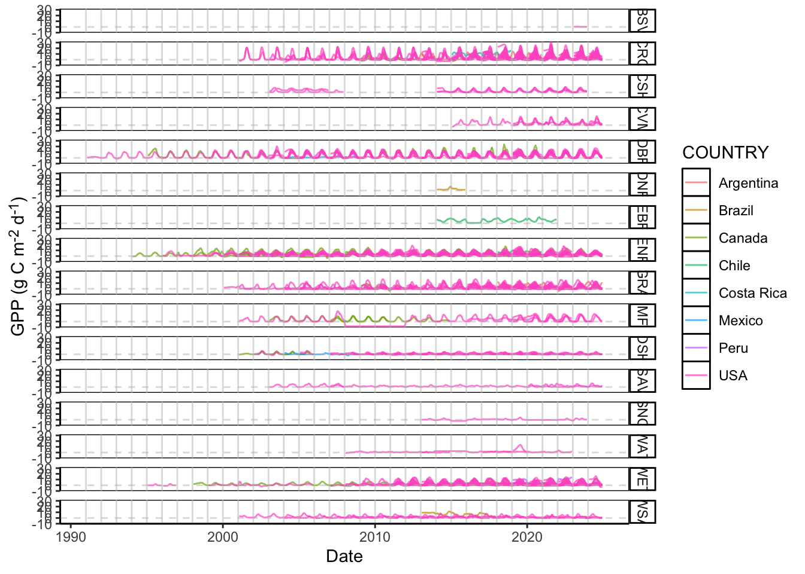
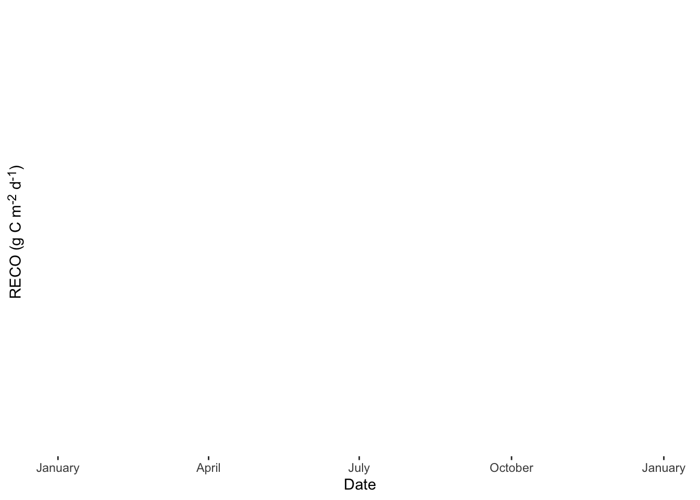
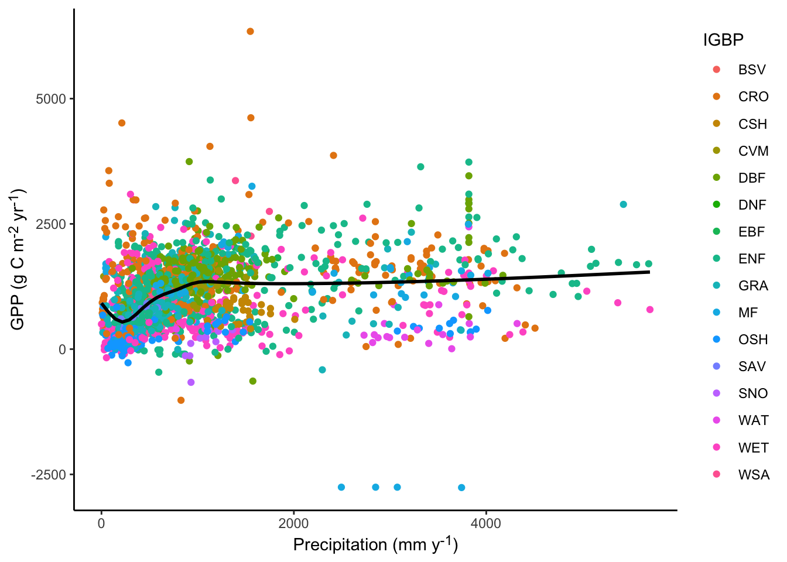
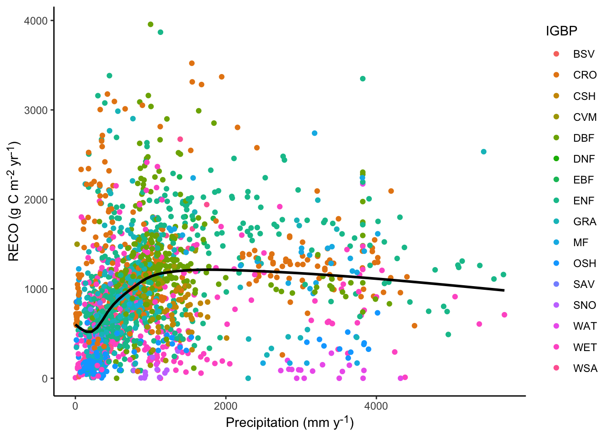
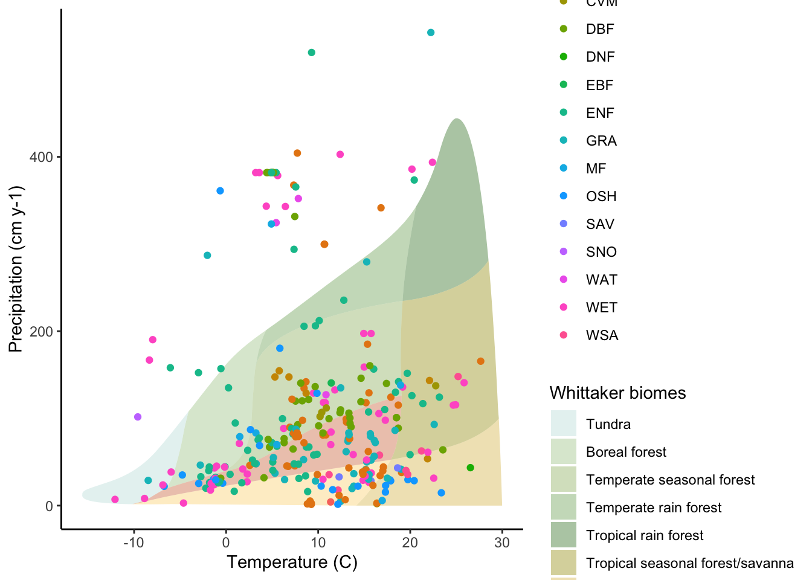

Code
# Need dev version of `amerifluxr` package to get `amf_download_fluxnet` function.
pak::pak("chuhousen/amerifluxr")
pak::pak("valentinitnelav/plotbiomes")Kristina Riemer
Dave Moore
Eric R. Scott ![]()
tsibble::yearmonth and tsibble::scale_x_yearmonth# Need dev version of `amerifluxr` package to get `amf_download_fluxnet` function.
pak::pak("chuhousen/amerifluxr")
pak::pak("valentinitnelav/plotbiomes")library(dplyr)
library(lubridate)
library(ggplot2)
library(amerifluxr)
library(stringr)
library(readr)
library(purrr)
library(tidyr)
library(plotbiomes)
library(measurements)
library(ggnewscale)
library(fs)
library(geomtextpath)
library(ggtext) #for subscripts in axis labels
library(ggforce) #for convex hulls in bowen ratios plot
#source data loading functions
source("R/fcn_utility_FLUXNET.R")
#set default ggplot2 theme
theme_set(theme_classic() + theme(axis.title = element_markdown()))amf_sites <- amerifluxr::amf_sites()
amf_sites$COUNTRY |> unique() [1] "Argentina" "Brazil" "Canada" "Chile" "Colombia"
[6] "Costa Rica" "Mexico" "Panama" "Peru" "Puerto Rico"
[11] "USA" amf_sites_nam <- amf_sites |>
filter(COUNTRY %in% c("Mexico", "Canada", "USA")) |>
pull(SITE_ID)Code for downloading Ameriflux data (all sites in North America)
#check what sites you already have
fluxnet_files <- tibble(
path = dir_ls(
"data/",
regexp = "AMF_[^_]+_FLUXNET_FULLSET_(?:YY|DD|HH|WW)_[0-9]{4}-[0-9]{4}_.*\\.csv$",
recurse = TRUE
)
) |>
mutate(
filename = path_file(path),
to_split = path_ext_remove(filename)
) |>
separate_wider_delim(
to_split,
names = c(
"source",
"SITE_ID",
"fluxnet",
"set",
"period",
"yr_range",
"junk"
),
delim = "_"
) |>
select(-fluxnet, -junk) |>
separate_wider_delim(
SITE_ID,
names = c("country_code", "site"),
delim = "-",
cols_remove = FALSE
)
sites_to_dl <- setdiff(amf_sites_nam, unique(fluxnet_files$SITE_ID))
zip_paths <- amf_download_fluxnet(
user_id = "Aariq",
user_email = "scottericr@gmail.com",
site_id = sites_to_dl,
data_product = "FLUXNET",
data_variant = "FULLSET",
data_policy = "CCBY4.0",
agree_policy = TRUE,
intended_use = "synthesis",
intended_use_text = "creating pipeline for standardized figures",
out_dir = "data/AMF"
)
# Only unzip files needed
walk(
zip_paths,
\(zip_path) {
t <- c("DD", "YY", "HH") #which FULLSET CSVs to extract
exdir <- fs::path_ext_remove(zip_path)
#split apart the file name and insert `t` in the right place
file_vect <- zip_path |>
path_file() |>
stringr::str_split("_") |>
pluck(1)
files <- paste(
paste(file_vect[1:4], collapse = "_"),
t,
paste(file_vect[5:6], collapse = "_"),
sep = "_"
) |>
fs::path_ext_set("csv")
unzip(zip_path, files = files, exdir = exdir)
},
.progress = TRUE
)# site_metadata <- load_fluxnet_metadata() |>
# filter(SITE_ID %in% amf_sites_nam)
# fluxnet_annual <- load_and_clean_annual_data(site_metadata)
# fluxnet_daily <- load_and_clean_daily_data(site_metadata)
fluxnet_files <- tibble(
path = dir_ls(
"data/",
regexp = "AMF_[^_]+_FLUXNET_FULLSET_(?:YY|DD|HH|WW)_[0-9]{4}-[0-9]{4}_.*\\.csv$",
recurse = TRUE
)
) |>
mutate(
filename = path_file(path),
to_split = path_ext_remove(filename)
) |>
separate_wider_delim(
to_split,
names = c(
"source",
"SITE_ID",
"fluxnet",
"set",
"period",
"yr_range",
"junk"
),
delim = "_"
) |>
select(-fluxnet, -junk) |>
separate_wider_delim(
SITE_ID,
names = c("country_code", "site"),
delim = "-",
cols_remove = FALSE
)
#check if I got all the sites
length(unique(fluxnet_files$SITE_ID))[1] 299length(amf_sites_nam)[1] 720missing <- setdiff(amf_sites_nam, unique(fluxnet_files$SITE_ID))
missing #amerifluxr says it cant find data for these [1] "CA-AF1" "CA-BCW" "CA-BSM" "CA-Ca3" "CA-CF2" "CA-CF3" "CA-Cha" "CA-CQ1"
[9] "CA-DL1" "CA-DL2" "CA-EM3" "CA-ER2" "CA-IQT" "CA-KLP" "CA-Let" "CA-LU1"
[17] "CA-LU2" "CA-LuM" "CA-MR3" "CA-MR5" "CA-Na1" "CA-NS8" "CA-Oas" "CA-Obs"
[25] "CA-Ojp" "CA-Qcu" "CA-RBM" "CA-RPn" "CA-RPp" "CA-RSB" "CA-SF3" "CA-SJ1"
[33] "CA-SJ2" "CA-SJ3" "CA-TP2" "CA-TP4" "CA-TPA" "CA-TVC" "CA-WP1" "CA-WP2"
[41] "CA-WP3" "CA-WRF" "MX-Aog" "MX-Asf" "MX-BRN" "MX-CLS" "MX-EMg" "MX-Iit"
[49] "MX-ISD" "MX-Oak" "MX-PMm" "MX-Ray" "MX-Sgt" "US-A03" "US-A10" "US-A12"
[57] "US-A14" "US-A20" "US-A30" "US-A31" "US-A33" "US-A38" "US-A40" "US-A41"
[65] "US-AaG" "US-ABa" "US-ABb" "US-ABc" "US-ABd" "US-ABe" "US-AC2" "US-AC3"
[73] "US-AC5" "US-AC6" "US-Act" "US-ADR" "US-AF1" "US-AMS" "US-An1" "US-An2"
[81] "US-An3" "US-AoL" "US-ASL" "US-Atq" "US-Aud" "US-AV1" "US-AV2" "US-AV3"
[89] "US-AV4" "US-AV5" "US-BCM" "US-Bd4" "US-Bd5" "US-Bd6" "US-BdA" "US-BdC"
[97] "US-Beo" "US-Bes" "US-BFS" "US-BgC" "US-Bkg" "US-Blk" "US-Blo" "US-BMM"
[105] "US-Bn1" "US-Bn2" "US-Bn3" "US-Bo1" "US-Bo2" "US-Br1" "US-Br2" "US-Br3"
[113] "US-Brw" "US-Bsg" "US-BSM" "US-BWa" "US-BWb" "US-BWe" "US-BZL" "US-CaV"
[121] "US-CC1" "US-CC2" "US-Ced" "US-ChR" "US-CLF" "US-CMW" "US-CN1" "US-CN2"
[129] "US-CPF" "US-CPk" "US-CRE" "US-CRW" "US-CS7" "US-Ctn" "US-CU1" "US-CwG"
[137] "US-Cwt" "US-CX1" "US-CX2" "US-CZ1" "US-CZ2" "US-CZ3" "US-CZ4" "US-DBk"
[145] "US-DCS" "US-Dea" "US-Deu" "US-Dia" "US-Dix" "US-Dk1" "US-Dk2" "US-Dk3"
[153] "US-DPP" "US-DUF" "US-E32" "US-EA4" "US-EKH" "US-EKN" "US-EKP" "US-EKY"
[161] "US-EPM" "US-FBE" "US-Fo1" "US-Fo2" "US-FPe" "US-FR1" "US-FR2" "US-FR3"
[169] "US-GBT" "US-GCE" "US-GL2" "US-GMF" "US-Goo" "US-GR8" "US-GR9" "US-GZ1"
[177] "US-GZ2" "US-GZ3" "US-Ha2" "US-HB5" "US-HB6" "US-HB7" "US-HBa" "US-HBb"
[185] "US-HBK" "US-Hn1" "US-Ho3" "US-HPY" "US-HRA" "US-HRC" "US-HRN" "US-HRo"
[193] "US-HRP" "US-HRS" "US-HVa" "US-IAA" "US-IAB" "US-IAC" "US-IAM" "US-IB1"
[201] "US-IB2" "US-IL1" "US-INa" "US-INb" "US-INc" "US-INd" "US-INe" "US-INf"
[209] "US-INg" "US-INi" "US-INj" "US-INn" "US-INp" "US-Ivo" "US-JLN" "US-JLR"
[217] "US-Jo3" "US-JRn" "US-KCM" "US-KFB" "US-KGF" "US-KL1" "US-KL2" "US-KL3"
[225] "US-KM1" "US-KM2" "US-KM3" "US-KM4" "US-KS4" "US-KUO" "US-KUT" "US-Kyv"
[233] "US-LA1" "US-LA2" "US-LGr" "US-LL1" "US-LL2" "US-LL3" "US-LMA" "US-LMB"
[241] "US-LMS" "US-LMW" "US-Los" "US-LPH" "US-LS1" "US-LU1" "US-LWW" "US-MAC"
[249] "US-MBP" "US-MC1" "US-MC2" "US-MCP" "US-Me4" "US-Me5" "US-Me7" "US-MEF"
[257] "US-Men" "US-MFs" "US-MG1" "US-MH1" "US-MH2" "US-Mi1" "US-Mi2" "US-Mi3"
[265] "US-Mj1" "US-Mj2" "US-MRf" "US-MRM" "US-MSR" "US-Mur" "US-MVF" "US-MVW"
[273] "US-MWA" "US-MWF" "US-MWS" "US-MWU" "US-MWW" "US-MZA" "US-NC2" "US-NC5"
[281] "US-Ne3" "US-NMj" "US-NP1" "US-NP2" "US-NR2" "US-NR3" "US-NR4" "US-Nrf"
[289] "US-Nrs" "US-NSa" "US-NSb" "US-NSW" "US-OF1" "US-OF2" "US-OK1" "US-OK2"
[297] "US-OPE" "US-PeA" "US-PFa" "US-PFf" "US-PFo" "US-PFs" "US-PHM" "US-PiU"
[305] "US-PLM" "US-PLo" "US-Pon" "US-PVA" "US-Px1" "US-Px2" "US-Px3" "US-Px4"
[313] "US-Px5" "US-RC1" "US-RC2" "US-RC3" "US-RC4" "US-RC5" "US-RFE" "US-RFW"
[321] "US-RGG" "US-RGR" "US-RTS" "US-SB1" "US-SB2" "US-SB3" "US-SCc" "US-SCd"
[329] "US-SCf" "US-SCg" "US-SCs" "US-SCw" "US-SdH" "US-SDU" "US-SFP" "US-Shd"
[337] "US-SHS" "US-Si1" "US-Si2" "US-SJ1" "US-SJ2" "US-Skr" "US-SM1" "US-Snd"
[345] "US-SO2" "US-SO3" "US-SO4" "US-SP2" "US-SP3" "US-SP4" "US-StS" "US-SuM"
[353] "US-SuS" "US-SuW" "US-SVC" "US-SVP" "US-Sx1" "US-Sx2" "US-Sx3" "US-SZ1"
[361] "US-SZ2" "US-SZ3" "US-TaS" "US-TCS" "US-TEF" "US-TFF" "US-TKs" "US-TLR"
[369] "US-TrB" "US-TrS" "US-Tur" "US-Tx1" "US-Tx2" "US-Tx3" "US-Tx4" "US-Tx5"
[377] "US-Tx6" "US-Tx7" "US-Tx8" "US-Tx9" "US-Uaf" "US-UG1" "US-UiA" "US-UiB"
[385] "US-UiC" "US-UiD" "US-UiE" "US-UiF" "US-UiG" "US-ULM" "US-Upa" "US-UR0"
[393] "US-UR1" "US-UR2" "US-UR3" "US-UR4" "US-UR5" "US-UR6" "US-UR7" "US-UR8"
[401] "US-UTG" "US-UTL" "US-UTM" "US-UTN" "US-UTW" "US-UUC" "US-UUP" "US-Vcs"
[409] "US-VFP" "US-VT1" "US-VT2" "US-WBW" "US-WCr" "US-Wdn" "US-WEP" "US-Wgr"
[417] "US-Wi2" "US-Wlr" "US-Wpp" "US-Wrc" "US-WT1" "US-WT2" "US-WT3" "US-Wwt"
[425] "US-xLE" "US-xPU" "US-xSP" "US-xTE" "US-YK1" "US-Ylw" "US-YNS" "US-ZF1"
[433] "US-ZF2"# because the CSVs all have different numbers of columns, you must map read_csv
# and rowbind the results instead of just passing the list of files to
# read_csv() which would be faster
fluxnet_annual_list <- fluxnet_files |>
filter(period == "YY") |>
pull(path) |>
map(read_csv)
fluxnet_annual <- fluxnet_annual_list |>
list_rbind(names_to = "path") |>
left_join(fluxnet_files |> select(path, SITE_ID), by = join_by(path)) |>
select(-path) |>
relocate(SITE_ID, .before = 1) |>
mutate(
across(where(is.numeric), \(x) na_if(x, -9999)),
year = as.integer(TIMESTAMP),
.before = TIMESTAMP
)
fluxnet_daily_list <- fluxnet_files |>
filter(period == "DD") |>
pull(path) |>
map(read_csv)
fluxnet_daily <- fluxnet_daily_list |>
list_rbind(names_to = "path") |>
left_join(fluxnet_files |> select(path, SITE_ID), by = join_by(path)) |>
select(-path) |>
relocate(SITE_ID, .before = 1) |>
mutate(
across(where(is.numeric), \(x) na_if(x, -9999)),
date = lubridate::ymd(TIMESTAMP),
.before = TIMESTAMP
)
#mrege in site "metadata"
site_metadata <- load_fluxnet_metadata()
fluxnet_daily <- left_join(fluxnet_daily, site_metadata, by = join_by(SITE_ID))
fluxnet_annual <- left_join(
fluxnet_annual,
site_metadata,
by = join_by(SITE_ID)
)#set up all the possible plot labels as objects for easy reference. These get formatted by `marquee`
lab_precip_annual <- "Precipitation (mm y<sup>-1</sup>)"
lab_gpp_daily <- "GPP (g C m<sup>-2</sup> d<sup>-1</sup>)"
lab_nee_daily <- "NEE (g C m<sup>-2</sup> d<sup>-1</sup>)"
lab_reco_daily <- "RECO (g C m<sup>-2</sup> d<sup>-1</sup>)"
lab_gpp_annual <- "GPP (g C m<sup>-2</sup> yr<sup>-1</sup>)"
lab_nee_annual <- "NEE (g C m<sup>-2</sup> yr<sup>-1</sup>)"
lab_reco_annual <- "RECO (g C m<sup>-2</sup> yr<sup>-1</sup>)"2 sites have annual precip > 6000mm—that’s gotta be an error
fluxnet_annual <- fluxnet_annual |> filter(P_F < 6000)Find all variables described on the FULLSET Data Product page. Plots are generally of 3 variables:
Lots of ways to smooth time series (i.e., filter)
window_size <- 51total_ts_gpp <- fluxnet_daily %>%
filter(SITE_ID == first(SITE_ID)) |>
mutate(
running_mean_gpp = stats::filter(
GPP_NT_VUT_REF,
rep(1 / window_size, window_size)
)
)
yr_start_dates <- total_ts_gpp %>%
filter(grepl("-01-01", date)) %>%
pull(date)
ggplot(total_ts_gpp, aes(x = date, y = GPP_NT_VUT_REF)) +
geom_point(size = 0.5, color = "darkgrey") +
geom_line(aes(y = running_mean_gpp), color = "blue", lwd = 1) +
geom_vline(xintercept = yr_start_dates, color = "grey", alpha = 0.5) +
labs(x = "Date", y = lab_gpp_daily)
total_ts_reco <- fluxnet_daily %>%
filter(SITE_ID == first(SITE_ID)) |>
mutate(
running_mean_reco = stats::filter(
RECO_NT_VUT_REF,
rep(1 / window_size, window_size)
)
)
ggplot(total_ts_reco, aes(x = date, y = RECO_NT_VUT_REF)) +
geom_point(size = 0.5, color = "darkgrey") +
geom_line(aes(y = running_mean_reco), color = "blue", lwd = 1) +
geom_vline(xintercept = yr_start_dates, color = "grey", alpha = 0.5) +
labs(x = "Date", y = lab_reco_daily)
total_ts_nee <- fluxnet_daily %>%
filter(SITE_ID == first(SITE_ID)) |>
mutate(
running_mean_nee = stats::filter(
NEE_VUT_REF,
rep(1 / window_size, window_size)
)
)
ggplot(total_ts_nee, aes(x = date, y = NEE_VUT_REF)) +
geom_point(size = 0.5, color = "darkgrey") +
geom_line(aes(y = running_mean_nee), color = "blue", lwd = 1) +
geom_vline(xintercept = yr_start_dates, color = "grey", alpha = 0.5) +
labs(x = "Date", y = lab_nee_daily)
Same smoother as used for single site.
total_ts_ms <- fluxnet_daily %>%
group_by(SITE_ID) %>%
mutate(
running_mean_gpp = stats::filter(
GPP_NT_VUT_REF,
rep(1 / window_size, window_size)
),
running_mean_reco = stats::filter(
RECO_NT_VUT_REF,
rep(1 / window_size, window_size)
),
running_mean_nee = stats::filter(
NEE_VUT_REF,
rep(1 / window_size, window_size)
)
)
yr_start_dates_ms <- total_ts_ms %>%
filter(grepl("-01-01", date)) %>%
pull(date)Show entire time series of GPP for all sites, with points for daily values.
ggplot(
total_ts_ms,
aes(
x = date,
y = GPP_NT_VUT_REF,
color = COUNTRY,
fill = COUNTRY,
group = SITE_ID
)
) +
geom_point(size = 0.1, alpha = 0.1, key_glyph = draw_key_rect) +
geom_vline(xintercept = yr_start_dates_ms, color = "grey", alpha = 0.5) +
geom_hline(yintercept = 0, color = "grey", alpha = 0.5, linetype = "dashed") +
facet_grid(vars(IGBP)) +
guides(colour = guide_legend(override.aes = list(alpha = 1))) +
labs(x = "Date", y = lab_gpp_daily) +
theme(panel.background = element_rect(color = "black"))
ggplot(
total_ts_ms,
aes(
x = date,
y = RECO_NT_VUT_REF,
color = COUNTRY,
fill = COUNTRY,
group = SITE_ID
)
) +
geom_point(size = 0.1, alpha = 0.1, key_glyph = draw_key_rect) +
geom_vline(xintercept = yr_start_dates_ms, color = "grey", alpha = 0.5) +
geom_hline(yintercept = 0, color = "grey", alpha = 0.5, linetype = "dashed") +
facet_grid(vars(IGBP)) +
guides(colour = guide_legend(override.aes = list(alpha = 1))) +
labs(x = "Date", y = lab_reco_daily) +
theme(panel.background = element_rect(color = "black"))
ggplot(
total_ts_ms,
aes(
x = date,
y = NEE_VUT_REF,
color = COUNTRY,
fill = COUNTRY,
group = SITE_ID
)
) +
geom_point(size = 0.1, alpha = 0.1, key_glyph = draw_key_rect) +
geom_vline(xintercept = yr_start_dates_ms, color = "grey", alpha = 0.5) +
geom_hline(yintercept = 0, color = "grey", alpha = 0.5, linetype = "dashed") +
facet_grid(vars(IGBP)) +
guides(colour = guide_legend(override.aes = list(alpha = 1))) +
labs(x = "Date", y = lab_nee_daily) +
theme(panel.background = element_rect(color = "black"))Show entire time series of GPP for all sites, with daily values smoothed out as a line.
ggplot(
total_ts_ms,
aes(x = date, y = running_mean_gpp, color = COUNTRY, group = SITE_ID)
) +
geom_line(lwd = 0.5, alpha = 0.7) +
geom_vline(xintercept = yr_start_dates_ms, color = "grey", alpha = 0.5) +
geom_hline(yintercept = 0, color = "grey", alpha = 0.5, linetype = "dashed") +
facet_grid(vars(IGBP)) +
labs(x = "Date", y = lab_gpp_daily) +
theme(panel.background = element_rect(color = "black"))
ggplot(
total_ts_ms,
aes(x = date, y = running_mean_reco, color = COUNTRY, group = SITE_ID)
) +
geom_line(lwd = 0.5, alpha = 0.7) +
geom_vline(xintercept = yr_start_dates_ms, color = "grey", alpha = 0.5) +
geom_hline(yintercept = 0, color = "grey", alpha = 0.5, linetype = "dashed") +
facet_grid(vars(IGBP)) +
labs(x = "Date", y = lab_reco_daily) +
theme(panel.background = element_rect(color = "black"))ggplot(
total_ts_ms,
aes(x = date, y = running_mean_nee, color = COUNTRY, group = SITE_ID)
) +
geom_line(lwd = 0.5, alpha = 0.7) +
geom_vline(xintercept = yr_start_dates_ms, color = "grey", alpha = 0.5) +
geom_hline(yintercept = 0, color = "grey", alpha = 0.5, linetype = "dashed") +
facet_grid(vars(IGBP)) +
labs(x = "Date", y = lab_nee_daily) +
theme(panel.background = element_rect(color = "black"))Show average daily values (with standard deviations)
# get averages by date across years
gpp_by_date <- fluxnet_daily %>%
filter(SITE_ID == first(SITE_ID)) |>
mutate(date_minus_year = format(date, '%m-%d')) %>%
group_by(date_minus_year) %>%
summarize(gpp_mean = mean(GPP_NT_VUT_REF), gpp_sd = sd(GPP_NT_VUT_REF)) %>%
mutate(date_fake_year = ymd(paste0("2024-", date_minus_year)))
ggplot(gpp_by_date, aes(x = date_fake_year, y = gpp_mean)) +
geom_ribbon(
aes(ymax = gpp_mean + gpp_sd, ymin = gpp_mean - gpp_sd),
fill = "grey"
) +
geom_point() +
labs(
x = "Date",
# y = "Mean GPP +/- SD"
y = lab_gpp_daily
) +
# theme_minimal() +
scale_x_date(date_labels = "%B")reco_by_date <- fluxnet_daily %>%
filter(SITE_ID == first(SITE_ID)) |>
mutate(date_minus_year = format(date, '%m-%d')) %>%
group_by(date_minus_year) %>%
summarize(
reco_mean = mean(RECO_NT_VUT_REF),
reco_sd = sd(RECO_NT_VUT_REF)
) %>%
mutate(date_fake_year = ymd(paste0("2024-", date_minus_year)))
ggplot(reco_by_date, aes(x = date_fake_year, y = reco_mean)) +
geom_ribbon(
aes(ymax = reco_mean + reco_sd, ymin = reco_mean - reco_sd),
fill = "grey"
) +
geom_point() +
labs(
x = "Date",
# y = "Mean RECO +/- SD"
y = lab_reco_daily
) +
# theme_minimal() +
scale_x_date(date_labels = "%B")
nee_by_date <- fluxnet_daily %>%
filter(SITE_ID == first(SITE_ID)) |>
mutate(date_minus_year = format(date, '%m-%d')) %>%
group_by(date_minus_year) %>%
summarize(nee_mean = mean(NEE_VUT_REF), nee_sd = sd(NEE_VUT_REF)) %>%
mutate(date_fake_year = ymd(paste0("2024-", date_minus_year)))
ggplot(nee_by_date, aes(x = date_fake_year, y = nee_mean)) +
geom_ribbon(
aes(ymax = nee_mean + nee_sd, ymin = nee_mean - nee_sd),
fill = "grey"
) +
geom_point() +
labs(
x = "Date",
# y = "Mean NEE +/- SD"
y = lab_nee_daily
) +
# theme_minimal() +
scale_x_date(date_labels = "%B")Textbook figures:
Show average daily values by site (symbols) and vegetation type (colors)
gpp_by_date_sites <- fluxnet_daily %>%
mutate(date_minus_year = format(date, '%m-%d')) %>%
group_by(SITE_ID, COUNTRY, IGBP, date_minus_year) %>%
summarize(
gpp_mean = mean(GPP_NT_VUT_REF),
gpp_sd = sd(GPP_NT_VUT_REF),
reco_mean = mean(RECO_NT_VUT_REF),
reco_sd = sd(RECO_NT_VUT_REF),
nee_mean = mean(NEE_VUT_REF),
nee_sd = sd(NEE_VUT_REF)
) %>%
mutate(date_fake_year = ymd(paste0("2024-", date_minus_year)))
gpp_by_date_sites |>
group_by(COUNTRY) |>
#some countries have no data
filter(!all(is.na(gpp_mean))) |>
ggplot(aes(x = date_fake_year, y = gpp_mean)) +
facet_wrap(vars(IGBP)) +
geom_point(aes(color = COUNTRY)) +
scale_x_date(date_labels = "%B") +
labs(x = "Date", y = lab_gpp_daily) +
theme_minimal() +
theme(axis.title = element_markdown())
gpp_by_date_sites |>
group_by(COUNTRY) |>
filter(!all(is.na(reco_mean))) |>
ggplot(aes(x = date_fake_year, y = reco_mean)) +
facet_wrap(vars(IGBP)) +
geom_point(aes(color = COUNTRY)) +
labs(x = "Date", y = lab_reco_daily) +
scale_x_date(date_labels = "%B") +
theme_minimal() +
theme(axis.title = element_markdown())gpp_by_date_sites |>
group_by(COUNTRY) |>
filter(!all(is.na(nee_mean))) |>
ggplot(aes(x = date_fake_year, y = nee_mean)) +
facet_wrap(vars(IGBP)) +
geom_point(aes(color = COUNTRY)) +
scale_x_date(date_labels = "%B") +
labs(x = "Date", y = lab_nee_daily) +
theme_minimal() +
theme(axis.title = element_markdown())
Textbook figure (for NEE):

Meteorological variables (bold indicates variable in figures):
Show annual precipitation, summed from daily data, against three main variables annually.
fluxnet_annual |>
filter(!is.na(GPP_NT_VUT_REF)) |>
ggplot(aes(x = P_F, y = GPP_NT_VUT_REF)) +
geom_point(aes(color = IGBP, group = SITE_ID)) +
geom_smooth(se = FALSE, color = "black") +
labs(x = lab_precip_annual, y = lab_gpp_annual)
fluxnet_annual |>
filter(!is.na(RECO_NT_VUT_REF)) |>
ggplot(aes(x = P_F, y = RECO_NT_VUT_REF)) +
geom_point(aes(color = IGBP, group = SITE_ID)) +
geom_smooth(se = FALSE, color = "black") +
labs(x = lab_precip_annual, y = lab_reco_annual)
fluxnet_annual |>
filter(!is.na(NEE_VUT_REF)) |>
ggplot(aes(x = P_F, y = NEE_VUT_REF)) +
geom_point(aes(color = IGBP, group = SITE_ID)) +
geom_smooth(se = FALSE, color = "black") +
labs(x = lab_precip_annual, y = lab_nee_annual)Show annual temperature, averaged from daily data, against three main variables annually.
fluxnet_annual |>
ggplot(aes(x = TA_F, y = GPP_NT_VUT_REF)) +
geom_point(aes(color = IGBP, group = SITE_ID)) +
geom_smooth(se = FALSE, color = "black") +
labs(x = "Temperature (ºC)", y = lab_gpp_annual)fluxnet_annual |>
ggplot(aes(x = TA_F, y = RECO_NT_VUT_REF)) +
geom_point(aes(color = IGBP, group = SITE_ID)) +
geom_smooth(se = FALSE, color = "black") +
labs(x = "Temperature (ºC)", y = lab_reco_annual)
fluxnet_annual |>
ggplot(aes(x = TA_F, y = NEE_VUT_REF)) +
geom_point(aes(color = IGBP, group = SITE_ID)) +
geom_smooth(se = FALSE, color = "black") +
labs(x = "Temperature (ºC)", y = lab_nee_annual)
Textbook figure (for NPP):

ggplot(fluxnet_annual, aes(x = P_F, y = GPP_NT_VUT_REF)) +
geom_smooth(se = FALSE, color = "black", linewidth = 0.5) +
# geom_smooth(se = FALSE, aes(color = site), method = "lm") +
geom_textsmooth(
aes(color = IGBP, label = IGBP),
se = FALSE,
method = "lm",
offset = unit(5, "pt"),
gap = FALSE,
# textcolor = "black",
size = 3
) +
labs(x = lab_precip_annual, y = lab_gpp_annual) +
guides(color = "none")Textbook figure:

Heat flux variables (bold indicates variable in figures):
Visual check of heat flux variable ranges.
# ggplot(fluxnet_daily, aes(x = LE_F_MDS)) +
# geom_histogram() +
# facet_wrap(vars(SITE_ID)) +
# theme_bw()
# ggplot(fluxnet_daily, aes(x = H_F_MDS)) +
# geom_histogram() +
# facet_wrap(vars(SITE_ID)) +
# theme_bw()Show average daily summer-only sensible vs latent heat flux (i.e., Bowen ratio) for multiple sites with different vegetation types. Bowen ratios of 3, 2, 1, 0.5, and 0.25 shown by dotted lines.
multiple_sites_flux <- fluxnet_daily %>%
filter(month(date) %in% c(6:8)) %>% #filter to include summer only
group_by(SITE_ID, IGBP) %>%
summarize(
latent_heat_flux = mean(LE_F_MDS),
sensible_heat_flux = mean(H_F_MDS)
)
upper_axis_limit <- pmax(
max(multiple_sites_flux$sensible_heat_flux),
max(multiple_sites_flux$latent_heat_flux)
) +
10
ggplot(
multiple_sites_flux,
aes(x = latent_heat_flux, y = sensible_heat_flux, color = IGBP)
) +
geom_point(size = 3) +
# geom_mark_hull(expand = unit(1, "mm")) + #looks ridiculous
geom_mark_ellipse(
aes(
label = IGBP,
fill = IGBP,
filter = IGBP %in% c("OSH", "CRO", "DBF") #highlight just a few?
),
label.fill = "inherit"
) +
geom_abline(
slope = c(0.25, 0.5, 1, 2, 3),
linetype = "dotted",
color = "darkgrey"
) +
scale_x_continuous(expand = c(0, 0), limits = c(0, upper_axis_limit)) +
scale_y_continuous(expand = c(0, 0), limits = c(0, upper_axis_limit)) +
# guides(x.sec = "axis", y.sec = "axis") +
guides(fill = "none") +
labs(
x = "Latent Heat Flux (W m<sup>-2</sup>)",
y = "Sensible Heat Flux (W m<sup>-2</sup>)"
) +
theme(
panel.border = element_rect(fill = NA),
axis.title = element_markdown(),
# axis.ticks.x.top = element_blank(),
# axis.text.x.top = element_blank(),
# axis.ticks.y.right = element_blank(),
# axis.text.y.right = element_blank()
)
Textbook figure:

The R package plotbiomes can be used to recreate the base plot here, which is referred to as a Whittaker plot. It includes a dataset of temperature, precipitation, and associated biome.
data("Whittaker_biomes")
head(Whittaker_biomes) temp_c precp_cm biome_id biome
1 -10.21600 1.607134 6 Tundra
1.1 -10.62857 1.696938 6 Tundra
1.2 -11.14116 1.846052 6 Tundra
1.3 -11.61776 2.028094 6 Tundra
1.4 -12.05961 2.242129 6 Tundra
1.5 -12.46799 2.486286 6 Tundraunique(Whittaker_biomes$biome)[1] "Tundra" "Boreal forest"
[3] "Temperate grassland/desert" "Woodland/shrubland"
[5] "Temperate seasonal forest" "Temperate rain forest"
[7] "Tropical rain forest" "Tropical seasonal forest/savanna"
[9] "Subtropical desert" Get mean values of annual precipitation (P_F) and temperature (TA_F) for each site, and convert precipitation to match Whittaker dataset units (mm/yr to cm/yr).
whittaker_format <- fluxnet_annual %>%
group_by(SITE_ID) %>%
summarize(mean_precip = mean(P_F), mean_temp = mean(TA_F)) %>%
mutate(mean_precip_cm = conv_unit(mean_precip, "mm", "cm")) %>%
left_join(site_metadata, by = join_by(SITE_ID))Show mean annual precipitation and temperature of each site over Whittaker biome.
ggplot() +
geom_polygon(
data = Whittaker_biomes,
aes(x = temp_c, y = precp_cm, fill = biome),
# fill = "white"
alpha = 0.4
) +
# scale_fill_brewer(palette = "BrBG") +
scale_fill_manual(
name = "Whittaker biomes",
breaks = names(Ricklefs_colors),
labels = names(Ricklefs_colors),
values = Ricklefs_colors
) +
# new_scale_color() +
geom_point(
data = whittaker_format,
aes(x = mean_temp, y = mean_precip_cm, color = IGBP)
) +
# scale_color_brewer(palette = "Set1") +
labs(x = "Temperature (C)", y = "Precipitation (cm y-1)")
Textbook figure:

The energy flux variables are listed below. The ones that have multiple possible options are discussed below in the questions section.
Parsing dates and times:
#not working currently
rad_dt <- single_site_hourly %>%
mutate(
date = date(datetime_start),
time = format(as.POSIXct(datetime_start), format = '%H:%M')
)Show average half-hourly shortwave, longwave, and total radiation for a single site. Data collection starts min(rad_dt$date) and ends max(rad_dt$date).
rad_means <- rad_dt %>%
group_by(time) %>%
summarise(
rn_mean = mean(NETRAD),
sw_in_mean = mean(SW_IN_F),
sw_out_mean = mean(SW_OUT),
lw_in_mean = mean(LW_IN_F),
lw_out_mean = mean(LW_OUT)
) %>%
pivot_longer(
!time,
names_to = "energy_flux_var",
values_to = "energy_flux_value"
) %>%
mutate(
energy_flux_var = factor(
energy_flux_var,
levels = c(
"rn_mean",
"sw_in_mean",
"sw_out_mean",
"lw_in_mean",
"lw_out_mean"
)
)
)
ggplot(rad_means, aes(x = time, y = energy_flux_value)) +
geom_line(aes(group = energy_flux_var, linetype = energy_flux_var)) +
geom_hline(yintercept = 0) +
#geom_point() +
labs(x = "Time (hr)", y = "Energy flux (W m-2)") +
theme_minimal() +
scale_x_discrete(
breaks = c("00:00", "04:00", "08:00", "12:00", "16:00", "20:00")
) +
scale_linetype_manual(
values = c("solid", "dotted", "dotted", "dashed", "dashed")
)Textbook figure for APAR vs GPP for two sites:

Show photosynthetically active radiation to GPP.
Which dataset is APAR in? It’s listed in the data variables page, but not on the fullset page or in the single site hourly, daily, or annual datasets. Other MET_RAD variables like SW/LW radiation and photon flux density are in those datsets. Also not in BADM.